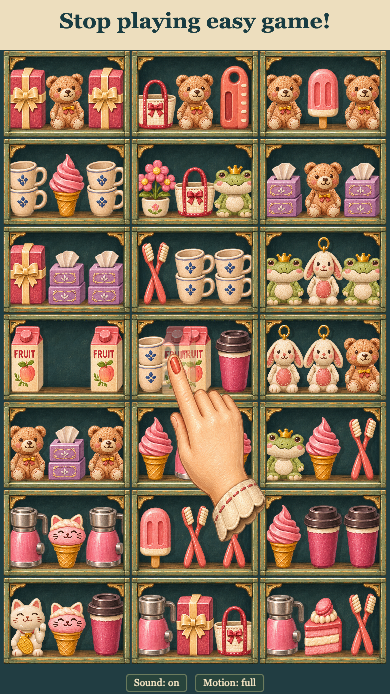
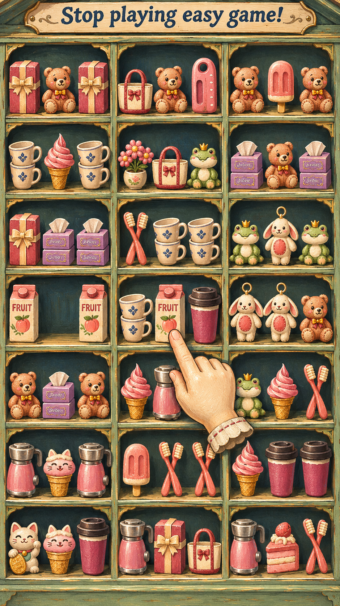
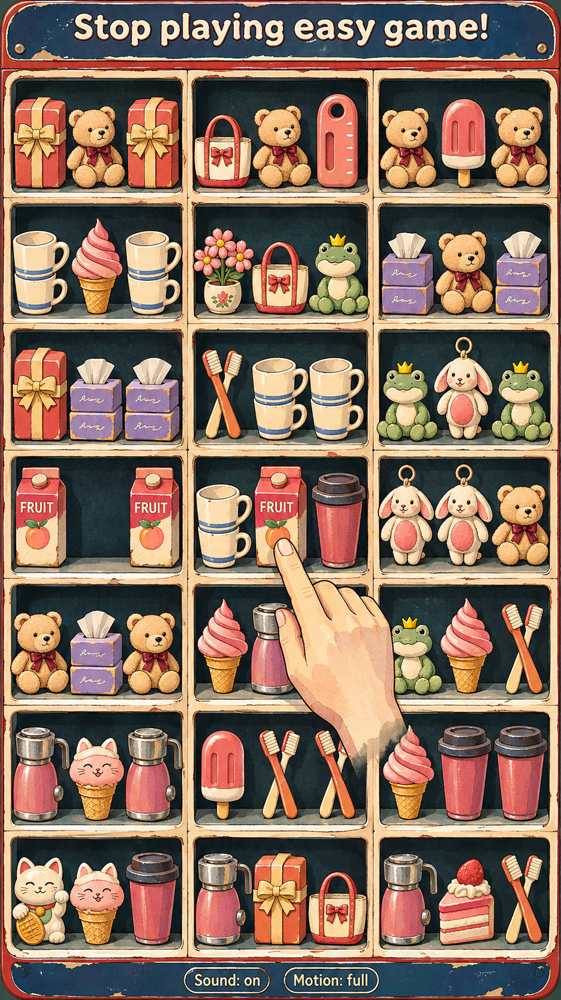

Goods Puzzle — Miniature Atelier
Actual original and improved gameplay, recorded separately with the same 17 legal drags at normal speed. The soundtrack is the improved playable’s real output.






Painted miniature materials, articulated toy actions and event-specific feedback use the existing shelf layout, controls and matching rules. The gallery’s Concept Videos remain separate direction studies.
- Desktop Chromium verification; physical-device performance has not been measured.
- The sound mix was captured and measured without clipping; subjective listening and perceptual audiovisual synchronization remain unreviewed.
- Articulated heads and arms are implemented; separate facial expression, blink and independent ear tracks are not implemented. The film/AAA references are craft benchmarks, not a parity claim.